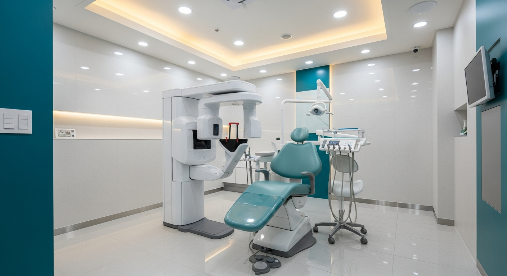
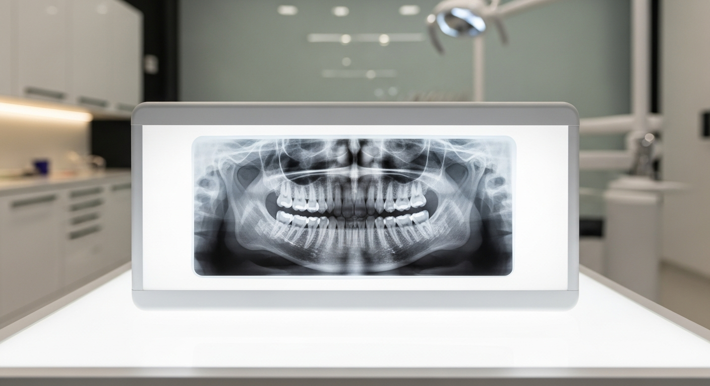
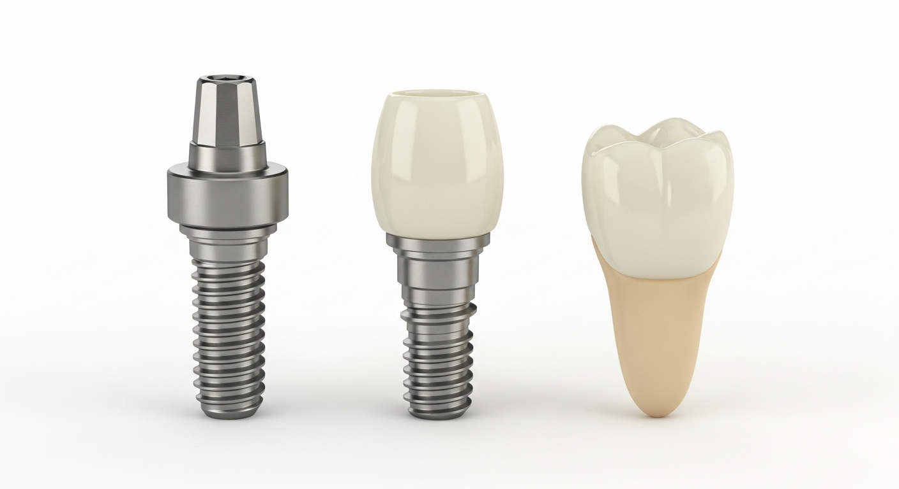
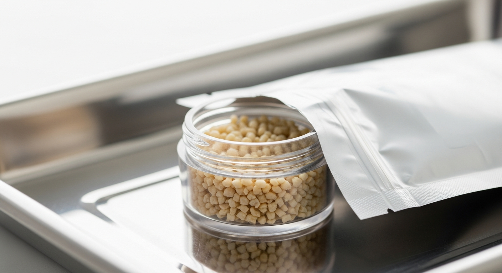
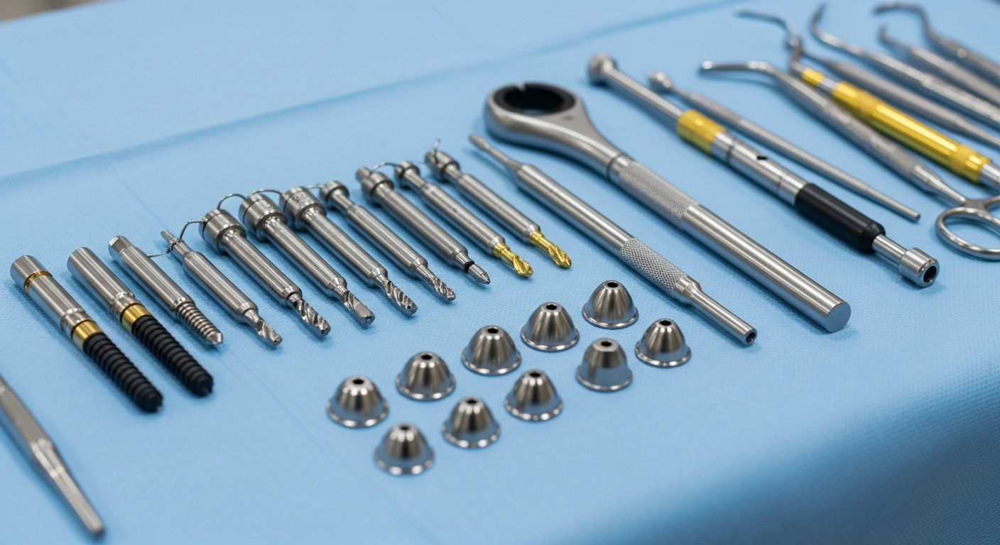

뼈이식이 필요한지, 어느 정도 필요한지
CT 촬영 후 정확히 확인할 수 있습니다
정밀 진단을 통해 본인에게 맞는 치료 계획을 상담받아보세요.
부담 없이 문의하실 수 있습니다.
031-546-0051 | 평일 09:30~18:30 / 토 09:30~14:30
임플란트 뼈이식 | 뼈이식 임플란트 | 임플란트 뼈이식 기간 | 뼈이식 필요한 경우
임플란트 뼈이식이 필요하다는 진단을 받으면, 비용도 기간도 늘어나는 것 같아 부담이 앞섭니다. "정말 꼭 해야 하나?" "다른 치과에서는 필요 없다고 하던데?" 하는 의문이 드는 것도 당연합니다.
실제로 임플란트 시술 환자의 약 40~50%는 뼈이식을 함께 진행합니다. 잇몸뼈가 부족한 상태에서 임플란트를 식립하면 고정력이 떨어져 실패 확률이 높아지기 때문입니다. 이 글에서는 뼈이식이 필요한 경우, 시술 과정, 회복 기간까지 실제 환자분들이 궁금해하는 내용을 정리했습니다.

CT 촬영으로 잇몸뼈 상태를 3D로 확인합니다
임플란트 뼈이식이란, 잇몸뼈(치조골)가 부족한 부위에 골이식재를 채워 넣어 뼈의 양과 밀도를 회복시키는 시술입니다. 임플란트 나사(픽스처)가 단단히 고정되려면 충분한 양의 잇몸뼈가 필요한데, 뼈가 부족하면 이 과정을 먼저 거쳐야 합니다.
치아를 오래 방치하거나 치주질환이 진행되면 잇몸뼈가 자연스럽게 흡수되어 줄어듭니다. 이 상태에서 바로 임플란트를 심으면 나사가 뼈 밖으로 노출되거나 흔들릴 수 있어, 뼈이식을 통해 안정적인 기반을 만드는 것입니다.
핵심 요약
뼈이식은 임플란트의 "기초공사"에 해당합니다. 건물을 지을 때 지반이 약하면 기초를 다지듯, 잇몸뼈가 부족하면 뼈를 보강한 후 임플란트를 식립해야 장기적으로 안정적인 결과를 얻을 수 있습니다.
뼈이식이 필요한 경우는 크게 4가지로 나눌 수 있습니다. CT 촬영을 통해 잇몸뼈의 높이, 너비, 밀도를 정밀하게 측정한 후 판단합니다.
1. 치아를 뺀 후 오래 방치한 경우
발치 후 아무런 처치 없이 6개월 이상 지나면 잇몸뼈가 서서히 흡수됩니다. 1년이 지나면 뼈 높이가 평균 25~30% 감소한다는 연구 결과가 있습니다. 빈 자리를 오래 둘수록 뼈이식의 범위가 넓어집니다.
2. 치주질환(잇몸병)으로 뼈가 녹은 경우
치주염이 진행되면 잇몸뼈가 세균에 의해 파괴됩니다. 심한 치주질환으로 치아를 발치한 경우, 주변 뼈가 이미 상당 부분 소실된 상태인 경우가 많습니다.
3. 상악(윗턱) 어금니 부위의 뼈가 얇은 경우
윗턱 어금니 위에는 상악동(부비강)이라는 빈 공간이 있습니다. 이 공간이 크면 임플란트를 심을 뼈의 높이가 부족해지는데, 이때 상악동 거상술이라는 뼈이식 방법을 적용합니다.
4. 외상이나 사고로 뼈가 손상된 경우
교통사고나 낙상 등으로 턱뼈에 손상이 생긴 경우에도 뼈이식이 필요할 수 있습니다.

파노라마 X-ray로 전체 잇몸뼈 상태를 확인합니다
뼈이식 임플란트의 시술 과정은 뼈 부족 정도에 따라 달라집니다. 크게 두 가지 방식으로 나뉩니다.
동시 식립 방식은 뼈 부족이 경미한 경우에 적용합니다. 임플란트 식립과 뼈이식을 한 번의 수술로 동시에 진행하므로 치료 기간이 짧고 수술 횟수가 줄어듭니다. 전체 치료 기간은 약 3~6개월입니다.
단계적 식립 방식은 뼈 부족이 심한 경우에 적용합니다. 먼저 뼈이식을 진행하고 4~6개월간 뼈가 충분히 재생될 때까지 기다린 후 임플란트를 식립합니다. 전체 치료 기간은 약 8~12개월로 길어지지만, 성공률은 더 높습니다.

임플란트는 픽스처(나사), 지대주, 크라운 3개 부분으로 구성됩니다
시술 과정을 단계별로 정리하면 다음과 같습니다.
1단계. 정밀 검사 — CT 촬영과 구강 검진으로 뼈의 양, 밀도, 신경 위치를 파악합니다.
2단계. 치료 계획 수립 — 검사 결과를 바탕으로 뼈이식 범위와 식립 방식을 결정합니다.
3단계. 뼈이식 시술 — 잇몸을 절개한 후 골이식재를 채우고 차폐막으로 덮어줍니다.
4단계. 치유 대기 — 이식한 뼈가 자연 뼈와 결합하는 데 3~6개월이 소요됩니다.
5단계. 임플란트 식립 — 충분히 회복된 뼈에 임플란트 픽스처를 심습니다.
6단계. 보철물 연결 — 픽스처와 뼈가 결합(골유착)된 후 크라운을 장착합니다.
뼈이식에 사용되는 골이식재는 크게 4가지로 분류됩니다. 각 재료의 특성을 이해하면 치료 계획을 이해하는 데 도움이 됩니다.

다양한 형태의 골이식재
| 재료 종류 | 원료 | 장점 | 단점 |
|---|---|---|---|
| 자가골 | 본인의 뼈 | 골형성 능력 가장 우수 | 채취 부위 추가 수술 필요 |
| 동종골 | 타인의 뼈 (처리 후 사용) | 자가골과 유사한 효과 | 공급량 제한, 비용 높음 |
| 이종골 | 소/돼지 뼈 (처리 후 사용) | 공급 안정적, 가장 많이 사용 | 골형성 능력은 자가골보다 낮음 |
| 합성골 | 인공 합성 재료 | 감염 위험 낮음, 공급 무제한 | 흡수 속도 느림 |
현재 임상에서 가장 많이 사용되는 것은 이종골입니다. 안전성이 검증되어 있고, 공급이 안정적이며, 비용 대비 효과가 우수합니다. 경우에 따라 자가골과 이종골을 혼합하여 사용하기도 합니다.
임플란트 뼈이식 기간은 뼈 부족 정도와 이식 방법에 따라 차이가 있습니다. 일반적인 기간을 정리하면 다음과 같습니다.
| 구분 | 소량 뼈이식 | 중등도 뼈이식 | 대량 뼈이식 (블록골) |
|---|---|---|---|
| 뼈이식 치유 기간 | 2~3개월 | 4~6개월 | 6~9개월 |
| 임플란트 동시 식립 | 가능 | 경우에 따라 가능 | 어려움 (단계적 진행) |
| 전체 치료 기간 | 3~5개월 | 6~9개월 | 10~14개월 |
| 수술 시간 | 30~40분 | 40~60분 | 60~90분 |
수술 후 초기 3~5일은 붓기와 통증이 있을 수 있으며, 처방된 항생제와 진통제를 복용하면 대부분 관리 가능합니다. 일상 복귀는 보통 2~3일 후 가능하지만, 격렬한 운동이나 음주는 2주 이상 피하는 것이 좋습니다.
뼈이식의 성공률을 높이기 위해서는 수술 후 관리가 매우 중요합니다. 이식한 뼈가 안정적으로 생착하려면 다음 사항을 지켜야 합니다.

정밀한 수술 기구를 사용합니다
수술 당일~3일: 수술 부위를 자극하지 않도록 합니다. 빨대 사용, 강한 양치질, 코 풀기를 삼가고 부드러운 음식 위주로 식사합니다. 냉찜질을 20분 간격으로 해주면 붓기 완화에 도움이 됩니다.
수술 후 1~2주: 처방된 약을 빠짐없이 복용하고, 수술 부위 반대편으로 식사합니다. 실밥 제거 전까지 수술 부위의 칫솔질은 피하되, 나머지 부위는 청결하게 관리합니다.
수술 후 1~6개월: 정기적으로 내원하여 뼈 재생 경과를 확인합니다. 흡연은 뼈 생착률을 30~40% 낮추는 것으로 보고되어 있으므로, 최소 수술 후 4주간은 금연이 필수입니다.
뼈이식은 일반 임플란트보다 난이도가 높은 시술입니다. 치과를 선택할 때 다음 3가지를 확인하시면 도움이 됩니다.
첫째, CT 장비 보유 여부입니다. 뼈이식의 정확한 계획을 세우려면 3D CT 촬영이 필수입니다. 2D 파노라마만으로는 뼈의 정확한 두께와 밀도를 파악하기 어렵습니다.
둘째, 사용하는 골이식재의 종류와 출처입니다. 어떤 제조사의 어떤 재료를 사용하는지 투명하게 안내하는 치과가 신뢰할 수 있습니다. 검증된 정품 재료 사용 여부를 확인하는 것이 좋습니다.
셋째, 사후 관리 체계입니다. 뼈이식 후에는 3~6개월간 정기적인 경과 관찰이 필요합니다. 체계적인 사후 관리 프로그램이 있는지, 문제 발생 시 즉각 대응이 가능한지 확인합니다.
Q. 임플란트 뼈이식은 많이 아픈가요?
수술 중에는 국소마취를 하기 때문에 통증을 거의 느끼지 않습니다. 수술 후 마취가 풀리면 2~3일간 욱신거리는 통증이 있을 수 있으나, 처방된 진통제로 충분히 관리 가능한 수준입니다. 개인차가 있지만 대부분 "예상보다 덜 아팠다"고 표현하십니다.
Q. 뼈이식 없이 임플란트를 할 수는 없나요?
뼈가 충분하면 뼈이식 없이 바로 임플란트를 심을 수 있습니다. 다만 뼈가 부족한 상태에서 무리하게 식립하면 임플란트가 흔들리거나 탈락할 수 있습니다. 정밀 CT 촬영 후 실제 뼈 상태를 확인해야 정확한 판단이 가능합니다.
Q. 임플란트 뼈이식 기간은 얼마나 걸리나요?
뼈이식만 놓고 보면 치유 기간은 약 3~6개월입니다. 임플란트 식립까지 포함한 전체 치료 기간은 짧으면 4개월, 길면 12개월 이상 소요될 수 있습니다. 뼈 부족 정도, 전신 건강 상태, 흡연 여부 등에 따라 달라집니다.
Q. 뼈이식 실패 확률은 어느 정도인가요?
뼈이식의 성공률은 일반적으로 90~95% 이상으로 보고됩니다. 다만 흡연자, 당뇨 환자, 구강 위생이 불량한 경우에는 성공률이 낮아질 수 있습니다. 금연과 철저한 구강 관리가 성공률을 높이는 핵심 요소입니다.
Q. 고령자도 뼈이식 임플란트가 가능한가요?
나이 자체가 제한 요인은 아닙니다. 전신 건강 상태가 양호하고 혈액 검사에서 이상이 없다면 70~80대 환자분들도 뼈이식 임플란트를 성공적으로 진행하는 경우가 많습니다. 다만 골다공증 치료제를 복용 중인 경우에는 반드시 사전에 알려주셔야 합니다.
뼈이식이 필요한지, 어느 정도 필요한지
CT 촬영 후 정확히 확인할 수 있습니다
정밀 진단을 통해 본인에게 맞는 치료 계획을 상담받아보세요.
부담 없이 문의하실 수 있습니다.
031-546-0051 | 평일 09:30~18:30 / 토 09:30~14:30
더 자세한 정보는 홈페이지에서 확인하실 수 있습니다.
https://claude-old.vercel.app